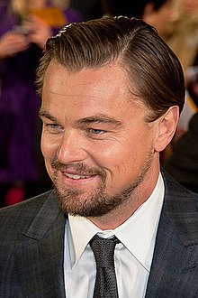

Ukrayna
Ukrayna
Sylvester Stallone:
Babaannesi Odesa doğumlu Yahudi kökenli Roza RabinoviçMila Yovoviç:
1975 Kiev doğumludur.

Vupi Goldberg:
Babaannesi Odesa doğumludur.
Winona Ryder:
Ailesi Harkov’dan ABD’ye yerleşmiş. Ryder bir 2. Dünya Savaşı filminde rol almak istiyor.
Mila Kunis:
Son yıllarda yıldızı hızla parlayan Hollwood yıldızı Kunis, 1983 Çernovtsi doğumlu.
Olga Kurilenko:
Son olarak Cem Yılmaz’ın da oynadığı Gelibolu filminde rol alan Kurilenko, Berdyansk doğumlu. Kurilenko geçtiğimiz yıllarda James Bond filminde de rol almıştı.
Dustin Hoffman:
Büyük babası ve büyük annesi Kiev’de yaşayan ve Bolşevik devrimi sırasında öldürülen Hoffman’ın, kökleri hakkındaki tüm detayları bildiği söylenir.
Steven Spielberg:
Dünyaca ünlü yönetmen Spielberg’in ailesi Odesalıdır.
Vera Farmiga:
Emmy ödüllü ünlü Amerikalı aktris Vera Farmiga’nın ailesi Ukrayna’dan Amerika’ya göç etmiştir.
Leonardo Di Caprio:
Ünlü Amerikalı oyuncu Leonardo Di Caprio’nun büyük annesi Ukrayna doğumludur. Almanya’ya göç etmiş sonra ABD’ye yerleşmiştir.
